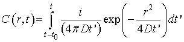
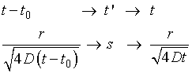
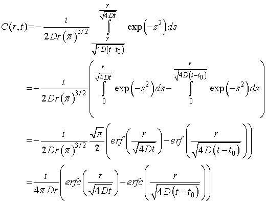

一定の時間粒子を注入した場合（ランダムウォークの計算を考える），その4
式，(2.12)は，注入後（t0以上の時間）の時間変化ですから，積分において積分範囲を変えるだけとなります．

これを計算すればいいのです．
積分範囲の下限が，t-t0，となっているのは，t0，以降の範囲の計算となるからです（ちょっと自信がありませんが．．．．）
前回と同様に変数変換をすれば，積分範囲は，

となるので，

となります．ここで，注意すべき点は，バーグは補誤差関数，erfc，を使っています．